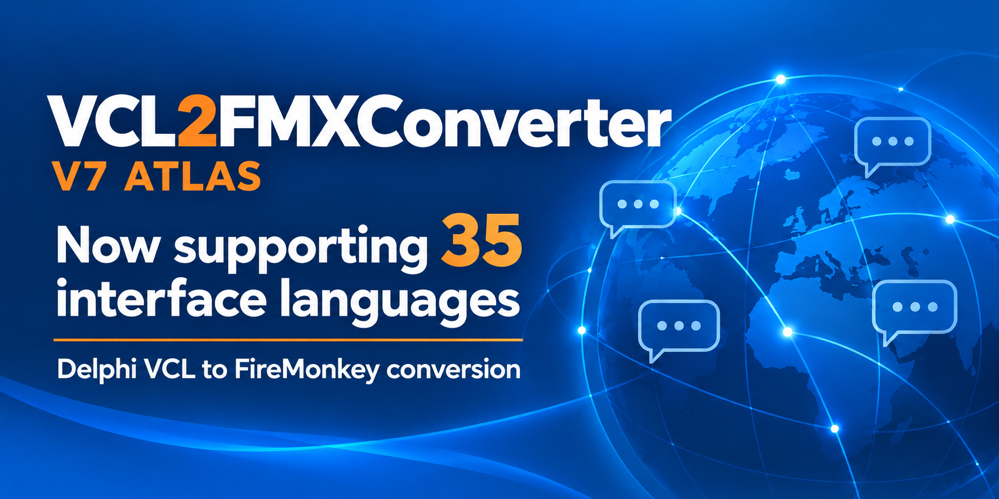
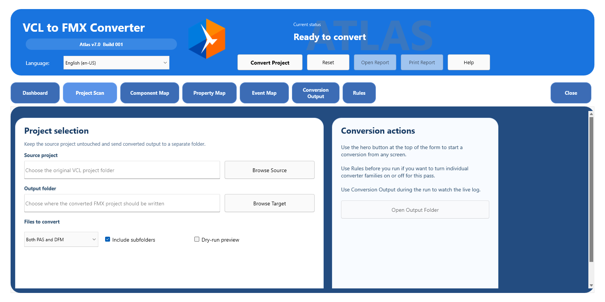

Forms and components
Converts many standard VCL controls to FMX equivalents and preserves layout information where practical.
VCL2FMXConverter v7.0 Atlas
VCL2FMXConverter V7 can now be viewed in 35 different languages. Language support is the major change for this version. The established conversion workflow is retained, with additional input, output and encoding safeguards.

Included with V7
All 35 included languages and regional variants, listed alphabetically. English names are followed by native names in parentheses.
Machine translations — native-speaker review pending. The 35 language packs contain machine-generated translations that have not been reviewed by native speakers. Translations can be corrected or refined using the Delphi App Translation Studio. Translation errors and changes may be sent to the developer for adjustments.
The included languages were selected based on the countries and language preferences of users who have previously downloaded the converter.
Add a language. Make a translation your own.
Use the Delphi App Translation Studio to add more languages, edit existing translations, and edit the glossaries.
Download the manuals and guides along with the software. They explain how to work with language packs, translations, and glossaries.
Read the V7 translation editing and installation instructions.
https://delphitranslate.github.io
V7 Atlas
The Project Scan screen shown here uses English. Choose any of the 35 bundled languages in the converter.

What the converter does
The converter produces an editable FMX-oriented project and an honest report—not a black-box promise of one-click conversion.
Converts many standard VCL controls to FMX equivalents and preserves layout information where practical.
Maps common VCL properties and event names when the translation is safe and meaningful.
Highlights unsupported APIs, Windows-specific code, third-party controls, conversion risks, and work that needs manual review.
Uses 227 focused expectations to guard generated code, report behavior, project integration, and known conversion boundaries.
A practical workflow
Point the converter at a Delphi VCL project. The original project remains the source of truth.
The converter analyzes Pascal and DFM files, applies supported mappings, and generates FMX-oriented output.
Open the generated project in Delphi, work through the report, and validate real application behavior.
Third-party component support
Optional JSON mapping packs can convert simple components, partially convert controls with warnings, detect complex controls, or preserve selected references. Developers can adjust packs without forcing unsafe assumptions into the converter core.
Repeatable engineering safeguards
Each contract is a small Delphi test case plus an expected JSON result. Together they describe the generated Pascal, FMX, project, and report behavior that the converter must produce—or must deliberately avoid. Contracts are engineering safeguards, not files that normal conversions compare against at runtime.
Know the boundaries
Generated output is a migration starting point. Compiling, testing, UI inspection, and programmer review remain essential.
Considering a conversion product?
Learn why form translation is not complete application migration, which claims deserve scrutiny, and what evidence a responsible converter should provide.
Contact and feedback
Include the converter version, Delphi version, a short project description, and the generated HTML report when possible.
For a translation correction, include the language and locale, screen or Help topic, current wording and suggested wording. For clipped text, add the window size and Windows display scaling. Remove private details from screenshots and reports.